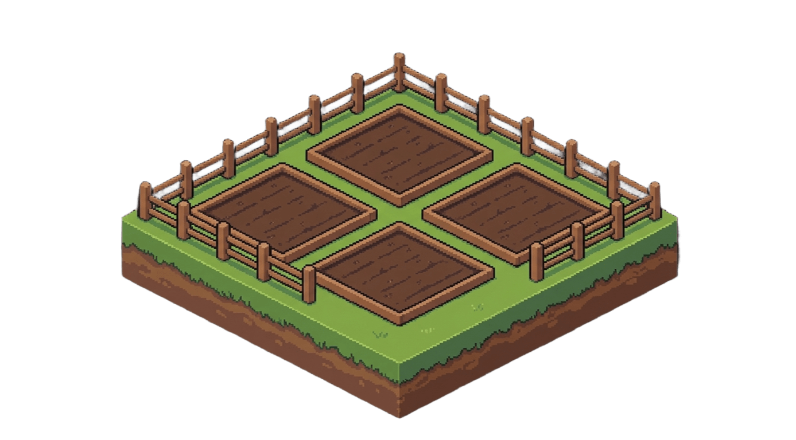
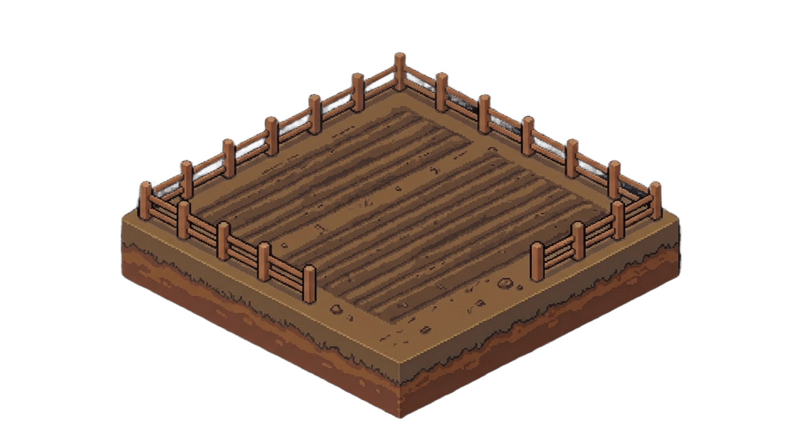
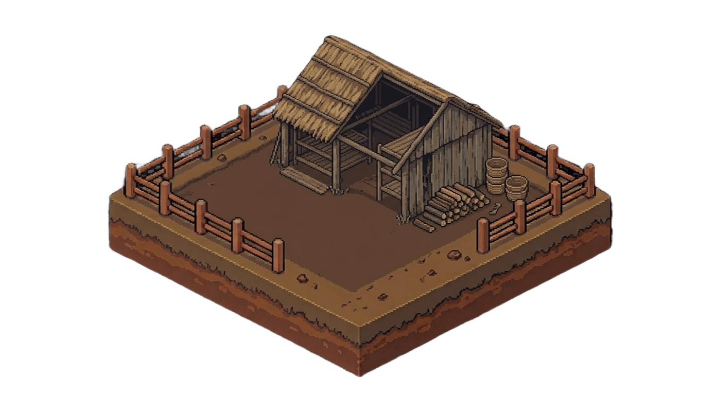
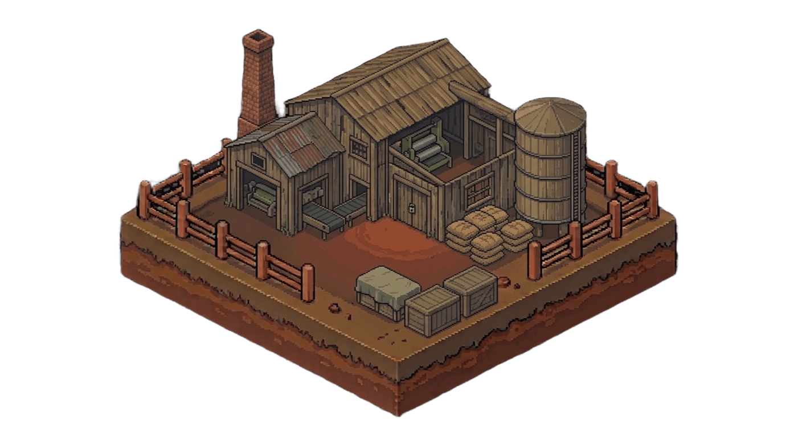

🏢 Oficina Administrativa — Centro de Mando Táctico
Monitoreo consolidado, balances sintéticos y orden ejecutiva de cierre semanal.
✅ Solvente
📌 Estado de Situación & Racha
Semana de Gestión:
Semana 1 de 120
Racha Competitiva:
0 semanas invicto (Récord: 0)
⚖️ Balance General Sintético
Activos Totales:
$0.00
Pasivo Bancario:
$0.00
Patrimonio Neto:
$0.00
EBITDA Proyectado:
$0.00
🌱 Buzón Fitosanitario & Agroclimático INTA
📋 Consolidador de Decisiones Departamentales
Al procesar el turno, se consolidarán las decisiones de Producción, Mercado y Banco y se liquidará la semana frente al competidor.

1. Vivero de Plantines
Tope biológico: 300 pl/ciclo

2. Plantación & Yerbales
Maduración: Plurianual

3. Sapecado y Secadero
Capacidad Sapecado: 0 kg/sem
Hoja Verde en Planchada: 0 kg
4. Estacionamiento (Noques / Cámaras)
Cámara Acelerada: 0 kg
En Maduración: 0 kg
Canchada Lista p/Moler: 0 kg

5. Molienda y Tipificación IRAM 20550
Capacidad Molienda: 0 kg/sem
Yerba Mate Elaborada: 0 kg
🛒 Fase 1: Abastecimiento & Tarefa de Cosecha (Make or Buy)
Decisión IrreversibleDetermina la estrategia de aprovisionamiento para la semana. Compara el costo unitario de tarefa propia vs precio spot en planchada y observa el bypass logístico a estacionamiento. Las decisiones confirmadas no podrán modificarse.
🚜 Tarefa Propia (Make)
$145.00 /kg
Costo operativo directo de cuadrilla de tareferos
VS
🛒 Hoja Verde Spot (Buy)
$0.00 /kg
Precio de mercado a colonos terceros en planchada
Ahorro Make: --
🔄 Diagrama de Flujo Logístico & Desvío (Bypass)
Hoja Verde
(Tarefa o Spot)
➔ [Sapecado y Secadero (3:1)] ➔
Estacionamiento
(Noques / Cámaras)
⚡ BYPASS DIRECTO: Compras de Yerba Mate Canchada Spot ($0.00/kg) ingresan inmediatamente a Noques / Cámaras de estacionamiento sin ocupar capacidad del secadero .
🔥 Saturación de Tolva / Planchada de Recepción de Secadero:
Normal (0%)
Recepción semanal de hoja verde: 0 kg / Capacidad: 0 kg
🌾 Tarefa en Yerbales & Vivero
* Rendimiento canónico: ~1.5 kg HV/planta (8,500 kg/ha) | Costo tareferos: $145.00/kg
* Ocupación actual de vivero: 0 / 300 plantines